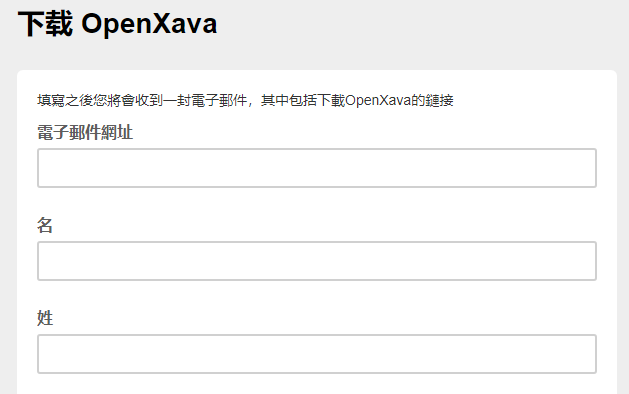
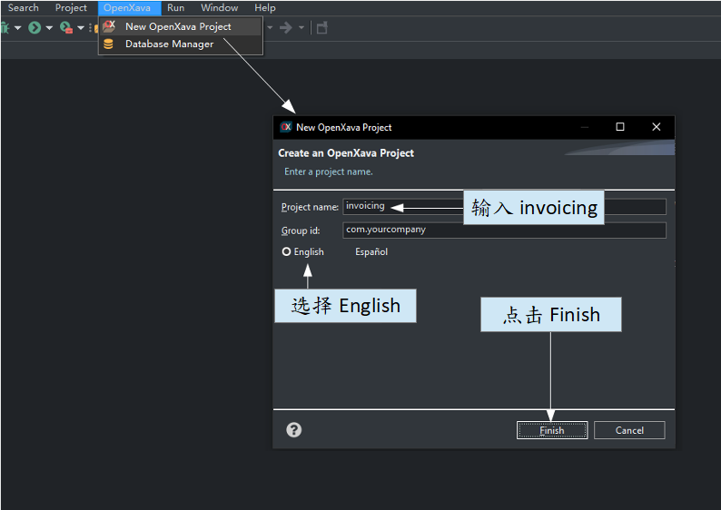
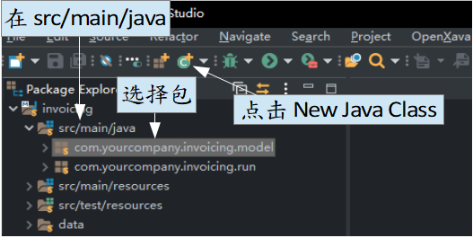

OpenXava 与 LeanXcale
LeanXcale 是什么?
LeanXcale 是一个 ACID 数据库引擎，可以从单个节点线性灵活地扩展到数百个节点，并拥有一个具有个位数毫秒延迟的键值 API，并在大容量下保持相同的性能。LeanXcale 可以随着您的业务增长而线性扩展，从 MVP 到全球部署；另外还提供了一个快速灵活的平台，可以 360 度全方位查看所有可用信息。
注册 LeanXcale
LeanXcale 有试用版而且无需提供任何信息。您只需要在此处使用您的电子邮件注册
几分钟后，您将收到一封激活试用版的电子邮件，点击后会将您带到 LeanXcale 平台。
OpenXava 是什么?
OpenXava 是一个高生产力的 Java 开源框架，专注于开发多平台的企业 Web 应用程序，且几乎支持所有关系数据库。注册并下载 OpenXava Studio
OpenXava 是免费的，您可以在此处注册并下载 Studio，或者您可以在其他 IDE 使用 Maven，如在 IntelliJ、VSC。 在注册后，您将收到一封电子邮件，其中包含下载的链接，以下面我们将使用此 IDE。
创建 OpenXava 新项目
首先，点击 OpenXava > New OpenXava Project 并在视窗输入 ：
打开 src/main/java 文件夹，选择 com.yourcompany.invoicing.model 包并点击 New Java Class 按钮：

再来在 Name 写下 Customer 为类名并按下 Finish。
注意 Customer 的"C"必须是大写，在 Java 所有类的开头都是大写。

在 Customer 贴上以下代码：
package com.yourcompany.invoicing.model;
import javax.persistence.*;
import org.openxava.annotations.*;
import lombok.*;
@Entity
@Getter @Setter
public class Customer {
@Id
@Column(length=6)
int number;
@Column(length=50)
@Required
String name;
}配置 OpenXava 以使用 LeanXcale
编辑项目根文件夹中的 pom.xml 文件，在 <dependencies> 中添加：<dependency>
<groupId>com.leanxcale</groupId>
<artifactId>qe-driver</artifactId>
<version>1.9.4</version>
</dependency>
<dependency>
<groupId>com.leanxcale.connectors</groupId>
<artifactId>hibernate-connector</artifactId>
<version>1.9.4</version>
</dependency>
<repository>
<id>maven-releases</id>
<url>https://nexus.leanxcale.com/repository/maven-releases</url>
</repository>